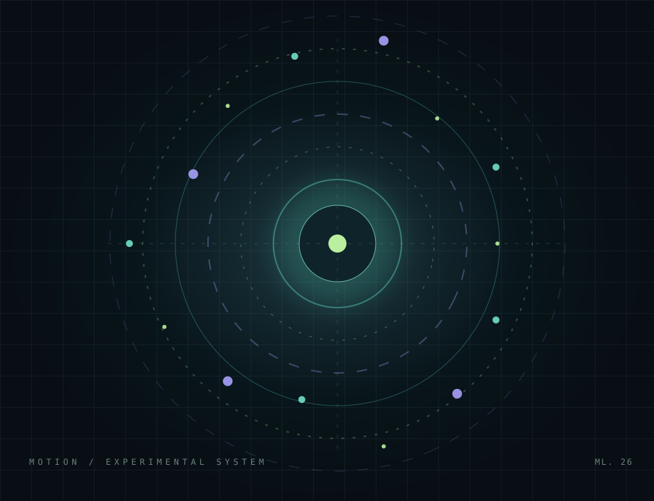
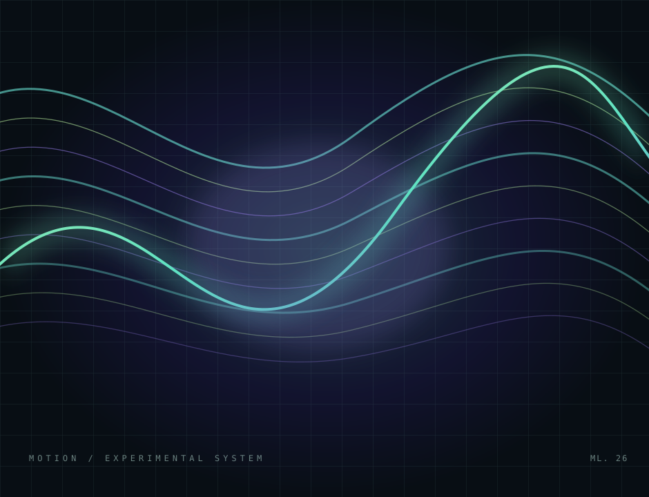
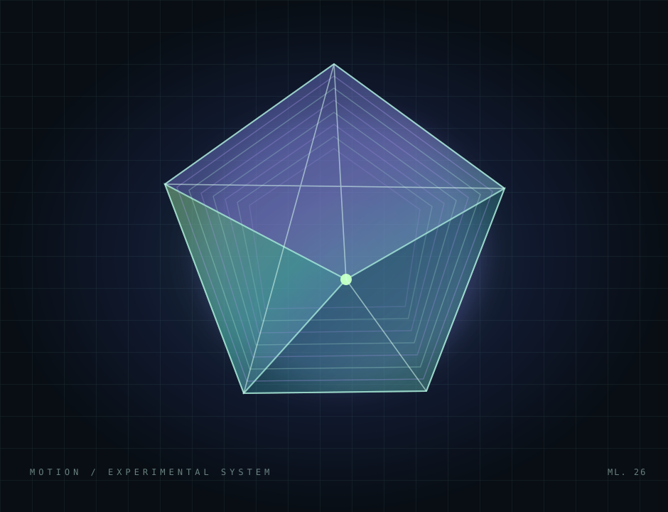
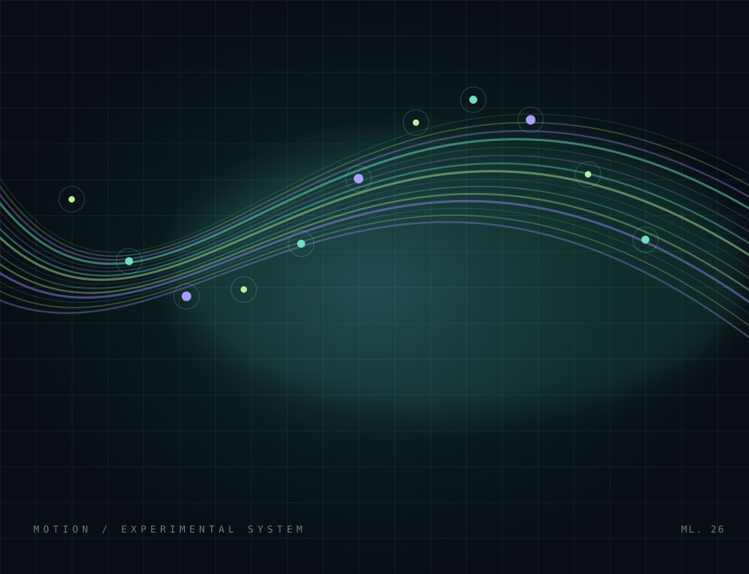

01 / NAVINTERACCIÓN
Menú hamburguesa
La navegación se despliega suavemente y el icono cambia de tres líneas a una X.
LABORATORIO WEB / EDICIÓN 2026
Una experiencia interactiva para descubrir cómo CSS avanzado convierte elementos estáticos en interfaces que responden, orientan y sorprenden.
01 / EXPERIMENTA
Prueba cada demostración. Debajo verás la técnica principal que la hace funcionar.
La navegación se despliega suavemente y el icono cambia de tres líneas a una X.
Una onda nace donde haces clic. JavaScript calcula la posición y CSS anima la expansión.
0 activaciones
La rotación continua comunica una espera. Puedes simular un proceso y observar su estado.
Los elementos aparecen al entrar en el área visible y la barra superior muestra el avance de lectura.
02 / OBSERVA
Desplázate hacia abajo: las composiciones aparecen progresivamente mediante una línea de tiempo vinculada a la vista.




03 / PROFUNDIZA
Además de los cuatro ejercicios, se añadieron mejoras que aportan utilidad, consistencia y accesibilidad.
Las tarjetas responden con elevación, cambios de borde y desplazamiento suave.
transform: translateY()Contenido y elementos visuales aparecen mientras se recorren las secciones.
animation-rangeUna línea fija en la parte superior refleja cuánto se ha desplazado la página.
scroll(root block)Modo claro/oscuro, soporte de teclado y reducción de movimiento solicitada.
prefers-reduced-motionCHILETE DEVPATH EXPLICA
Define estados de una animación. El navegador interpola los cambios entre el inicio y el final; la propiedad animation indica cómo y cuándo reproducirlos.
@keyframes spin {
from { transform: rotate(0deg); }
to { transform: rotate(360deg); }
}
.loader {
animation: spin 2s linear infinite;
}04 / ACERCA DEL LABORATORIO
MotionLab CSS es una práctica integradora de Chilete DevPath desarrollada con HTML5, CSS avanzado y JavaScript. Cada interacción tiene una finalidad y un código explicable.
Volver al inicio